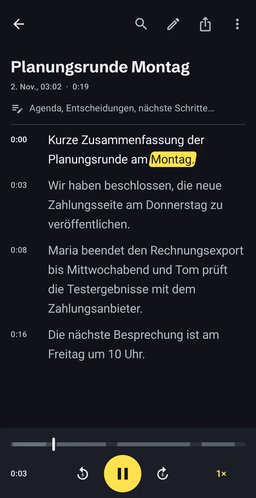
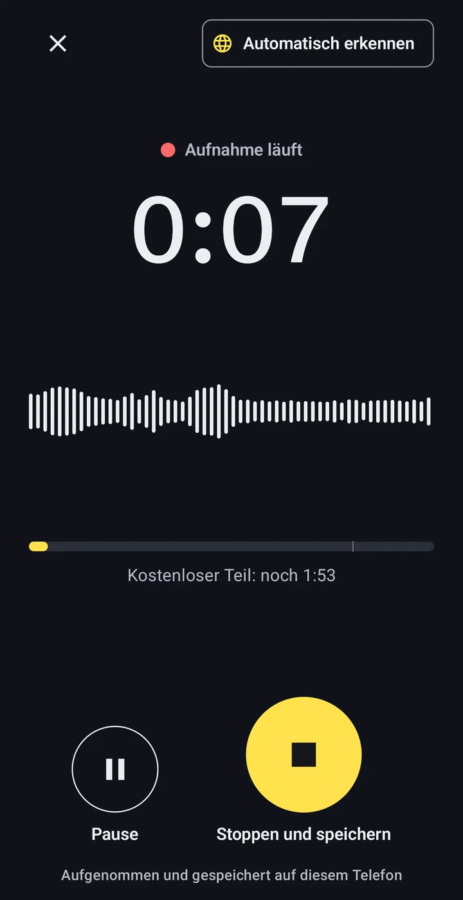
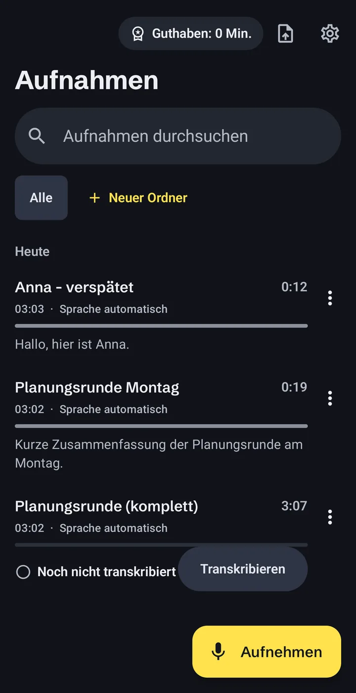
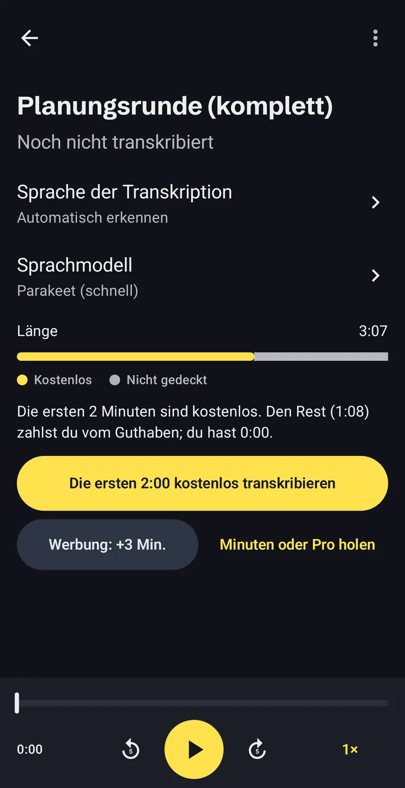

Audio in Text umwandeln, direkt auf dem Handy
Offline Audio Transcriber ist eine Transkriptions-App, die komplett auf Ihrem Android-Handy arbeitet. Aufnahmen, MP3- und Videodateien, Vorlesungen, Interviews und Sprachnachrichten werden zu Text. Ohne Konto, ohne Upload und ohne Internet, sobald das Sprachmodell auf dem Handy ist.
- Konto
- Nicht nötig
- Sprachmodell
- 671 MB, einmal laden
- Kostenlos
- 2 Min. jeder Aufnahme

So funktioniert die Transkription offline
Drei Schritte, alle auf dem Handy. Geladen wird nur das Sprachmodell, und das einmal.
-
Aufnehmen oder eine vorhandene Datei öffnen
Nutzen Sie den eingebauten Rekorder oder importieren Sie Audio- und Videodateien, auch aus Chat-Apps gespeicherte Sprachnachrichten.
- MP3
- M4A
- WAV
- OGG
- MP4
- und weitere Audio- und Videodateien

-
Das Handy transkribiert selbst
Das Sprachmodell läuft auf dem Prozessor des Handys, der Ton verlässt das Gerät nicht. Lange Aufnahmen laufen im Hintergrund weiter, mit einer Fortschrittsanzeige in der Benachrichtigung.
Einstündige Aufnahme60:00Dauer der Transkription~8:00Unser eigener Test auf einem Samsung Galaxy S23 Ultra. Ältere und günstigere Handys sind langsamer. -
Lesen, korrigieren, exportieren
Das Transkript hat Zeitstempel und folgt beim Abspielen dem Ton. Tippen Sie auf ein Wort, um an diese Stelle zu springen, korrigieren Sie Fehler, durchsuchen Sie den Text und sortieren Sie Aufnahmen in Ordner.
- TXT
- SRT
- VTT
- Kopieren
- Teilen

Was auf dem Handy bleibt, und wann die App online geht
Es gibt kein Konto und keinen Server von uns. Jeden Punkt unten finden Sie auch in der Datenschutzerklärung.
Bleibt auf dem Handy
- Ihre Aufnahmen und importierten Dateien
- Transkripte und Ihre Korrekturen
- Notizen, Ordner und Suche
Geht online, und wozu
- Modell
Einmaliger Download des Sprachmodells.Von huggingface.co und github.com.
- Werbung
Anzeigen, auch die freiwillige Anzeige, die 5 Minuten hinzufügt.Google AdMob. Im EWR, im Vereinigten Königreich und in der Schweiz entscheiden Sie im Einwilligungsformular von Google.
- Käufe
Kauf von Minutenpaketen oder Pro.Google Play. Ihre Zahlungsdaten sehen wir nie.
Keine Analyse-Tools, keine Absturzberichte, kein Verkauf von Daten. Einzelheiten in der Datenschutzerklärung.
Sprache in Text, in 24 europäischen Sprachen
Die Spracherkennung versteht diese Sprachen:
- Bulgarisch
- Dänisch
- Deutsch
- Englisch
- Estnisch
- Finnisch
- Französisch
- Griechisch
- Italienisch
- Kroatisch
- Lettisch
- Litauisch
- Maltesisch
- Niederländisch
- Polnisch
- Portugiesisch
- Rumänisch
- Schwedisch
- Slowakisch
- Slowenisch
- Spanisch
- Tschechisch
- Ukrainisch
- Ungarisch
Ein optionales zweites Modell ergänzt weitere Sprachen. Es läuft ebenfalls auf dem Handy und ist langsamer.
Was es kostet, auf einen Blick
Die Installation ist kostenlos. Sie zahlen nur für Minuten über den kostenlosen Teil hinaus und sehen vor dem Transkribieren, was eine Aufnahme braucht.
0:00–2:00Kostenlos: die ersten 2 Minuten jeder Aufnahme.
2:00–10:00Ihre Minuten: aus kurzen Anzeigen oder Minutenpaketen.
Mit Pro ist die ganze Aufnahme abgedeckt, egal wie lang.
- Kostenloser Teil
- Die ersten 2 Minuten jeder Aufnahme. Ohne Werbung.
- Kurze Anzeige
- Eine Anzeige bringt 5 Minuten mehr. Lädt eine Anzeige nicht, wird nichts blockiert.
- Minutenpakete
- 60, 180 oder 600 Minuten. Sie verfallen nie.
- Pro
- Unbegrenzte Minuten. Monatlich, jährlich oder als Einmalkauf.
Die Preise zeigt Google Play in Ihrer Währung, bevor Sie bestätigen. Abos verlängern sich, bis Sie sie in Google Play kündigen. Braucht eine Aufnahme mehr Minuten, als Sie haben, transkribiert die App den kostenlosen Teil und zeigt genau, wie viele Minuten fehlen.

Was oft gefragt wird
Werden meine Aufnahmen irgendwo hochgeladen?
Nein. Aufnahmen, Transkripte und Notizen liegen im privaten Speicher der App auf Ihrem Handy. Online geht die App nur, um das Sprachmodell zu laden, Werbung anzuzeigen und Käufe über Google Play abzuwickeln.
Funktioniert die App ohne Internet?
Ja, sobald das Sprachmodell geladen ist. Die Transkription selbst braucht keine Verbindung. Eine Anzeige für zusätzliche Minuten und Käufe brauchen eine.
Wie lange dauert die Transkription?
Auf einem Samsung Galaxy S23 Ultra dauerte eine einstündige Aufnahme in unserem Test etwa 8 Minuten. Ältere und günstigere Handys sind langsamer. Sie können die App verlassen; die Arbeit läuft im Hintergrund weiter.
Wie genau ist das Ergebnis?
Das hängt von der Aufnahme ab: Tonqualität, Akzent und Hintergrundgeräusche spielen mit. Wir veröffentlichen keine Genauigkeitswerte. Prüfen Sie wichtige Transkripte, bevor Sie sich darauf verlassen; jedes Wort lässt sich beim Anhören korrigieren.
Was ist kostenlos, was kostet Geld?
Die ersten 2 Minuten jeder Aufnahme sind kostenlos. Für mehr sehen Sie eine kurze Anzeige (+5 Minuten), kaufen ein Minutenpaket, das nie verfällt, oder nehmen Pro mit unbegrenzten Minuten.
Wie groß ist der Download?
Das Sprachmodell wird einmal geladen und ist 671 MB groß. Die App zeigt die Größe, bevor es losgeht. Mit knappem Datenvolumen besser über WLAN.
Wie lösche ich meine Daten?
Löschen Sie Aufnahmen in der App oder deinstallieren Sie die App, um alles zu entfernen, was sie gespeichert hat. Die Sprachmodelle lassen sich in den Einstellungen löschen.
Probieren Sie es mit Ihrer nächsten Aufnahme
Kein Konto nötig. Die ersten 2 Minuten jeder Aufnahme sind kostenlos.